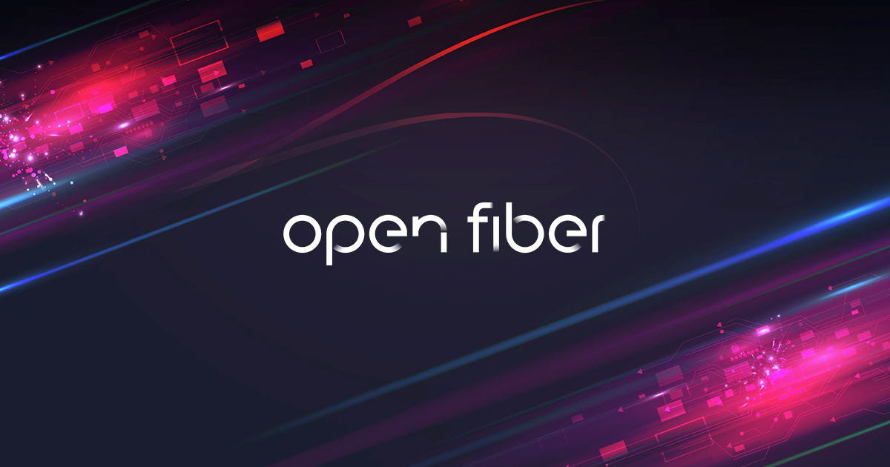

Azienda
Open Fiber è un'azienda italiana che si occupa dello sviluppo di infrastrutture di rete in fibra ottica per l'intero territorio nazionale.
Esperienza PCTO - sede di Bologna
Open Fiber è un'azienda italiana che si occupa dello sviluppo di infrastrutture di rete in fibra ottica per l'intero territorio nazionale.